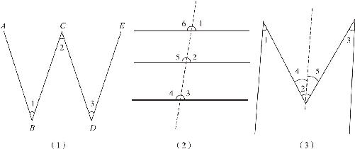

首先，我们看一下字母“W”．如图4－7（1）所示，“W”下边的这两个底角是什么关系呢？字母“W”一共包含了四条直线，底下这两个角之间根本就没有共同的边，不符合两条平行线被第三条直线所截的条件，平行线的几个定理看似一点忙都帮不上．仔细找找我们就会发现：第一条线和第三条线平行，第二条线和第四条线平行，也可以认为“W”就是在一个字母“N”的左边多加上了一笔形成的．如果把图中左边的一根直线遮住，剩下的部分就是字母“N”．字母“N”我们已经在前文中提到了，它是由两个内错角组成的，也就是说，∠2应该是等于∠3的．接着看，左边这个底角∠1和上边的顶角∠2有没有关系呢？如果我们把右边这条直线遮住就又会发现，左边的图形就是一个反写的“N”，因为“W”的第一笔和第三笔是平行的，所以∠1和∠2也是内错角的关系，它们两个也相等．∠1和∠3都与∠2相等，那不是说明这两个底角也相等吗？思路有了，下面我们就整理一下完整的证明过程．

图4－7
∵AB∥CD（已知），
∴∠1＝∠2（两直线平行，内错角相等）．
又∵BC∥DE（已知），
∴∠3＝∠2（两直线平行，内错角相等）．
又∵∠1＝∠2（已证），
∴∠1＝∠3．
接下来，我们讨论一个看起来很简单的证明题．一个汉字“三”，已知第一条直线和第二条直线都与底下的第三条直线平行，求证上边两条直线也平行！够简单的吧，我们只需要扫一眼就知道平行，还用证明吗？是的，就是让你证明它，而且要求你必须用刚学的这几条判定定理来证明．请问你怎么证明呢？要知道，我们刚才学的可是两条直线被第三条直线所截，但是在这个题目里面根本就没有相交线，也就更没有同位角、内错角这些东西，那我们怎么运用这些定理呢？没有不要紧，我们可以给它添加一条线，不过首先得明白，这条直线并不会影响原来的直线，人家原来的线该平行就是平行，该不平行仍然是不平行，不会因为增加了直线而改变了原图的性质．既然如此，为什么非要加上这条线呢？为了让我们学的东西能用上，为了让题目更简单．
我们在汉字“三”的基础上从上到下画上一根倾斜的竖线，汉字“三”就立刻变成“丰”字［见图4－7（2）］．“丰”字一出现，一切都变得简单明朗了：左右两边立刻出现了很多对同位角、内错角．以右边为例：因为上下两条直线平行，所以它们在右上角的一对同位角∠1和∠3就是相等的．同样，中间的第二条线和下面的第三条线也是平行的，它们右上角的∠2和∠3也是一对相等的同位角，由于∠1、∠2都和∠3相等，不就可以证明∠1和∠2也相等了吗？反过来，我们知道了这两个角相等，是不是也就证明了第一条直线和第二条直线平行了？没错，到这里我们就完整地证明了这个定理：两条直线都和第三条直线平行，那么这两条直线也相互平行．这也是一个标准的平行线定理，在以后遇到此类问题时可以直接使用它．在上述的证明过程中，我们要知道，当题目中给出的图形不够直观的时候，我们可以通过强行增加一条线或者几条线，来让证明过程变得明朗起来，这种凭空增加上去的线，它的作用是辅助我们证明的，所以叫作辅助线．当我们的证明受阻的时候，就可以尝试增加一条辅助线．下面我们就研究一个高难度的问题．
如图4－7（3）所示，看一下英文字母“M”内部的几个角之间有什么关系呢？一眼看过去，字母“M”好像只是把“W”反过来了？既然“W”的两个底角是相等的，把它反过来就变成了“M”的顶角，“M”的这两个顶角肯定也是相等的呀？别着急，如果我们仔细看就会发现：“M”和“W”还真不一样，这“W”是敞着口的，它最左边和最右边的两条线不平行；但“M”可不一样了，“M”左右两边是平行的，而且外侧的两条线和中间的两条线却不平行．那么，外侧的两条平行线有没有被第三条直线所截呢？对不起，仍然没有！这“M”的中间是一个“V”字形，“V”是由两条直线组成的，如果是一条线的话，“M”就变成“N”了．那怎么办呢？图中有平行线，但是却没有被第三条直线所截，中间的两条线又都帮不上什么忙．让我们再仔细分析一下：
题目让我们求的是“M”这个字母中的三个角的关系，但是由于第一条线和第三条线不平行，所以左边的∠1和中间的∠2肯定是不相等的，∠2看上去就比∠1大很多．它们有什么关系呢？最简单的办法就是：在这个大的角∠2里面裁剪出一个和这个小角∠1相等的角来，然后再在两者之间做对比，怎么裁呢？经过“M”的中间那个点，从上到下画一条和左边的竖线平行的辅助线，根据刚学的三线平行的定理可以知道：因为这条辅助线和左边的竖线平行，右边的竖线也和左边的竖线平行，所以新画出来的辅助线肯定也和右边的竖线平行．问题就变简单了：经过辅助线一切，这一个字母“M”，就变成贴在一起的两个“N”了，左右两边各有一对内错角，左边的∠1和中间靠左的∠4是一对内错角，右边的∠3和中间靠右的∠5是一对内错角，它们分别对应相等．而且我们还知道，∠4和∠5是从∠2切分出来的两个角，由于整体等于部分之和，所以∠2＝∠4＋∠5．因此，我们就知道，在字母“M”中，中间的角等于左右两个顶角的和．
古埃及人懂得了平行线的定理以后，分土地的工作就被大大简化了．在此之前，他们要确定一个角是不是直角，只能用画着十字的牛皮一个角一个角地比对．现在好办了，只要知道两个角相等，就知道了土地的两条边是平行的，进而可以快速地知道其他角度的情况．如果得知了其他的几条边也是平行的，只要再验证其中的任何一个角是直角，就意味着所有的角都是直角了．不过，大自然中河流弯弯曲曲，山脉起起伏伏，哪儿有那么多方方正正的土地让你去分呢，那么当他们遇到其他形状的土地时，又该怎么办呢？
(1) 编者注：在欧几里得《几何原本》中为第四公设：凡直角都彼此相等．
(2)
编者注：欧几里得在《几何原本》中的五大公设原文为：
（1）任意一点到另外任意一点可以画直线：
（2）一条有限线段可以继续延长：
（3）以任意点为心及任意长为半径，可作一圆；
（4）凡是直角都相等；
（5）两直线被第三条直线所截，如果同侧两个内角的和小于两个直角的和，则这两直线经无限延长后在这一侧相交．
作者在本书中对其顺序和表述进行了调整，本书中说的第五公设为原文第五公设的等价命题．